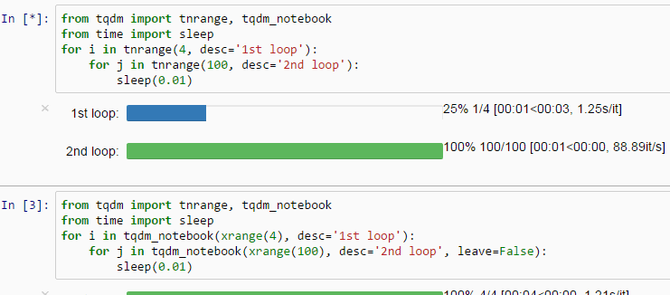
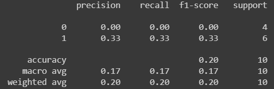

Clean Code in PyTorch: Best Practices for Readable ML
Five Tips for Writing Clean, Efficient and readable Code in PyTorch.
September 9, 2024 · PyTorch, Best Practices
Introduction
In the field of data science and programming in general, it is very important to be able to write code that is easy to read and maintain. Surely you too have had the experience of writing code that seemed to work fine and that was pretty clear, but then you reread it a day or a week later and it looked incomprehensible. Even more obvious is this difficulty when you have to review code written by other people.
In AI, it is critically important to write clear and understandable code, because we often have to set up several experiments, and then try multiple models, multiple data, and a ton of hyperparameters.
In this article, I share with you some tips that I use when programming with PyTorch that you can apply immediately and I hope they will help you become a little more efficient in your work as a data scientist.
Create a DataModule class to manage your data
In this example, I will be working with the well-known MNIST dataset. Although the practices I use may seem unnecessary in this case, since the various libraries already facilitate the use of such simple datasets, they can always come in handy when working with more complex datasets.
Many times when working with nonstandard datasets we have to go through different steps, such as downloading the data, structuring folders and subfolders to split the data, creating a custom Dataset class, and much more. So it would be useful to create a DataModule class that takes care of everything there is to do within it and provides two functions that directly return the data loaders that we will use for training.
Having such a class will allow us to have a cleaner and more scalable workflow on a large scale. Let’s look at a simple example.
import torch
from torch.utils.data import Dataset
from torchvision import datasets
from torchvision.transforms import ToTensor
class DataModule:
def __init__(self, bs = 64) -> None:
self.bs = bs
self.training_data = datasets.FashionMNIST(
root="data",
train=True,
download=True,
transform=ToTensor()
)
self.valid_data = datasets.FashionMNIST(
root="data",
train=False,
download=True,
transform=ToTensor()
)
def train_dataloader(self):
return torch.utils.data.DataLoader(self.training_data, batch_size=self.bs, shuffle=True)
def val_dataloader(self):
return torch.utils.data.DataLoader(self.valid_data, batch_size=4 * self.bs, shuffle=False)In this case, the DataModule class takes care of creating datasets and instantiating dataloaders using two functions. In this way, in the main function, I can simply call the train_dataloader() and val_dataloader() functions to access my data. In general, if you have some data retrieval tasks that you need to perform to collect your dataset, it’s a good practice to add them to the DataModule class, which can then be used to instantiate dataloaders. In this way, you can access the data in a straightforward manner.
Let’s reproduce TensorFlow fit method
I am not a big fan of TensorFlow, in fact, unless required I almost always work with PyTorch. Though, I find that the fit() method of TensorFlow is quite handy. In fact, after you have created a model you only need to call model.fit(data) to train it, somewhat like you do with models in scikit-learn.
So why not recreate something similar in PyTorch as well?
What we will do in the next example is to define a fit function that trains the network on the MNIST data by taking as input the DataModule created earlier. After that, we will make this function a method of our class that defines the model.
This way whenever we want to create a different model, we could always associate it with the fit() function, which remains unchanged.
class MNISTNet(nn.Module):
def __init__(self) -> None:
super(MNISTLogistic, self).__init__()
self.flatten = nn.Flatten()
self.lin = nn.Linear(784,10)
def forward(self, xb):
return self.lin(torch.flatten(xb,1))
def fit(self: nn.Module, datamodule, epochs:int, loss_fn = nn.CrossEntropyLoss()):
train_dataloader = datamodule.train_dataloader()
val_dataloader = datamodule.val_dataloader()
opt = configure_optimizer(self)
train_dataloader = datamodule.train_dataloader()
for epoch in range(epochs):
self.train()
for xb, yb in train_dataloader:
pred = self(xb)
loss = loss_fn(pred, yb)
loss.backward()
opt.step()
opt.zero_grad()
self.eval()
with torch.no_grad():
valid_loss = sum(loss_fn(self(xb), yb) for xb, yb in val_dataloader)
MNISTLogistic.fit = fitNow we can use model.fit(datamodule = datamodule, epochs = 3) to run our training.
Progress Bar
During the model training, it is really annoying not to have hints about how long it will take to finish. But fortunately, it is possible to implement a progress bar in PyTorch in a really easy way.
Just use the tqdm function and wrap the dataloader and explicitly state the total length of the dataloader with len(dataloader).
In this way, a progress bar will appear as if by magic, making the output much more visually appealing.
!pip install tqdm
from tqdm import tqdm
for index, (xb,yb) in tqdm(enumerate(train_loader), total = len(train_loader))
pred = self(xb)
loss = loss_fn(pred, yb)
loss.backward()
opt.step()
opt.zero_grad()
Evaluation Metrics
I don’t know why but when I read codes written in PyTorch I very frequently see people implementing common metrics by hand, such as precision, recall, accuracy…
However, this is not the case when they work with other libraries such as scikit-learn. Implementing these metrics within the training function can make the function difficult to read, and perhaps bugs are inserted even more easily.
My suggestion then is to use the metrics already found in libraries such as scikit-learn when working. This allows us to use code that is probably more robust but more importantly saves us time!
Of course, the discussion is different if there is a need to implement custom metrics, so if you are doing research on, for example, new methods for model evaluation.
Particularly when starting to develop a project and we want to use standard metrics to see if we are going in the right direction, I find it useful to use the classification_report function of scikit-learn. Let’s look at an example.
from sklearn.metrics import classification_report
preds = [0, 1, 1, 0, 1, 0, 1, 1, 0, 1]
labels = [1, 0, 0, 1, 1, 1, 0, 0, 1, 1,]
print(classification_report(labels, preds))
Image By Author
Final Thoughts
As a developer, I always try to make my code clear and clean (and bug-free!😉). I always try to keep in mind the fact that my code must be as understandable as possible even without the use of comments. Therefore, I love to learn easy-to-use tricks that I can implement immediately in my code.
If this article was helpful to you follow me to read my next articles of this type! 😊
The End
Marcello Politi
This article was published on Towards Data Science